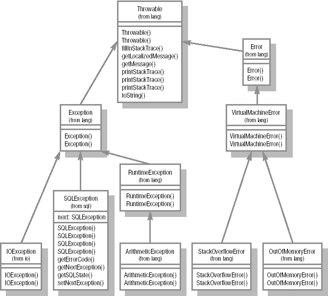

Ошибки при работе программы. Исключения (Exceptions)
При выполнении программы могут возникать ошибки. В одних случаях это вызвано ошибками программиста, в других - внешними причинами. Например, может возникнуть ошибка ввода/вывода при работе с файлом или сетевым соединением. В классических языках программирования, например, в С, требовалось проверять некое условие, которое указывало на наличие ошибки, и в зависимости от этого предпринимать те или иные действия.
Например:
:
int statusCode = someAction();
if (statusCode){
: обработка ошибки
} else {
statusCode = anotherAction();
if(statusCode) {
: обработка ошибки :
}
}
:
В Java появилось более простое и элегантное решение - обработка исключительных ситуаций.
try{
someAction();
anotherAction()
} catch(Exception e) {
: обработка исключительной ситуации
}
Легко заметить, что такой подход является не только изящным, но и более надежным и простым для понимания.
Причины возникновения ошибок
Существует три причины возникновения исключительных ситуаций.
- Попытка выполнить некорректное выражение.
Например, деление на ноль, или обращение к объекту по ссылке, равной null, попытка использовать класс, описание которого (class-файл) отсутствует, и т.д.
В таких случаях всегда можно точно указать, в каком месте произошла ошибка, - именно в некорректном выражении.
- Выполнение оператора throw
Этот оператор применяется для явного порождения ошибки. Очевидно, что и здесь можно указать место возникновения исключительной ситуации.
- Асинхронные ошибки во время исполнения программы.
Причиной таких ошибок могут быть сбои внутри самой виртуальной машины (ведь она также является рограммой), или вызов метода stop() у потока выполнения Thread.
В этом случае невозможно указать точное место программы, где происходит исключительная ситуация. Если мы попытаемся остановить поток выполнения (вызвав метод stop()), нам не удастся предсказать, при выполнении какого именно выражения этот поток остановится.
Таким образом, все ошибки в Java делятся на синхронные и асинхронные. С первыми сравнительно проще работать, так как принципиально возможно найти точное место в коде, которое является причиной возникновения исключительной ситуации. Конечно, Java является строгим языком в том смысле, что все выражения до точки сбоя обязательно будут выполнены, и в то же время ни одно последующее выражение никогда выполнено не будет. Важно помнить, что ошибки могут возникать как по причине недостаточной внимательности программиста (отсутствует нужный класс, или индекс массива вышел за допустимые границы), так и по независящим от него причинам (произошел разрыв сетевого соединения, сбой аппаратного обеспечения, например, жесткого диска и др.).
Асинхронные ошибки гораздо сложнее в обнаружении и исправлении. Обычному разработчику очень трудно выявить причины сбоев в виртуальной машине. Это могут быть ошибки создателей JVM, несовместимость с операционной системой, аппаратный сбой и многое другое. Все же современные виртуальные машины реализованы довольно хорошо и подобные сбои происходят крайне редко (при условии использования качественных комплектующих).
Аналогичная ситуация наблюдается и в случае с принудительной остановкой потоков исполнения. Поскольку это действие выполняется операционной системой, никогда нельзя предсказать, в каком именно месте остановится поток. Это означает, что программа может многократно отработать корректно, а потом неожиданно дать сбой просто из-за того, что поток остановился в каком-то другом месте. По этой причине принудительная остановка не рекомендуется. В лекции 12 рассматриваются примеры корректного управления жизненным циклом потока.
При возникновении исключительной ситуации управление передается от кода, вызвавшего исключительную ситуацию, на ближайший блок catch (или вверх по стеку) и создается объект, унаследованный от класса Throwable, или его потомков (см. диаграмму иерархии классов-исключений), который содержит информацию об исключительной ситуации и используется при ее обработке. Собственно, в блоке catch указывается именно класс обрабатываемой ситуации. Подробно обработка ошибок рассматривается ниже.
Иерархия, по которой передается информация об исключительной ситуации, зависит от того, где эта исключительная ситуация возникла. Если это
- метод, то управление будет передаваться в то место, где данный метод был вызван;
- конструктор, то управление будет передаваться туда, где попытались создать объект (как правило, применяя оператор new);
- статический инициализатор, то управление будет передано туда, где произошло первое обращение к классу, потребовавшее его инициализации.
Допускается создание собственных классов исключительных ситуаций. Осуществляется это с помощью механизма наследования, то есть класс пользовательской исключительной ситуации должен быть унаследован от класса Throwable, или его потомков.
Обработка исключительных ситуаций
Конструкция try-catch
В общем случае конструкция выглядит так:
try {
:
} catch(SomeExceptionClass e) {
:
} catch(AnotherExceptionClass e) {
:
}
Работает она следующим образом. Сначала выполняется код, заключенный в фигурные скобки оператора try. Если во время его выполнения не происходит никаких нештатных ситуаций, то далее управление передается за закрывающую фигурную скобку последнего оператора catch, ассоциированного с данным оператором try.
Если в пределах try возникает исключительная ситуация, то далее выполнение кода производится по одному из перечисленных ниже сценариев.
Возникла исключительная ситуация, класс которой указан в качестве параметра одного из блоков catch. В этом случае производится выполнение блока кода, ассоциированного с данным catch (заключенного в фигурные скобки). Далее, если код в этом блоке завершается нормально, то и весть оператор try завершается нормально и управление передается на оператор (выражение), следующий за закрывающей фигурной скобкой последнего catch. Если код в catch завершается не штатно, то и весь try завершается нештатно по той же причине.
Если возникла исключительная ситуация, класс которой не указан в качестве аргумента ни в одном catch, то выполнение всего try завершается нештатно.
Конструкция try-catch-finally
Оператор finally предназначен для того, чтобы обеспечить гарантированное выполнение какого-либо фрагмента кода. Вне зависимости от того, возникла ли исключительная ситуация в блоке try, задан ли подходящий блок catch, не возникла ли ошибка в самом блоке catch,- все равно блок finally будет в конце концов исполнен.
Последовательность выполнения такой конструкции следующая: если оператор try выполнен нормально, то будет выполнен блок finally. В свою очередь, если оператор finally выполняется нормально, то и весь оператор try выполняется нормально.
Если во время выполнения блока try возникает исключение и существует оператор catch, который перехватывает данный тип исключения, происходит выполнение связанного с catch блока. Если блок catch выполняется нормально, либо ненормально, все равно затем выполняется блок finally. Если блок finally завершается нормально, то оператор try завершается так же, как завершился блок catch.
Если в списке операторов catch не находится такого, который обработал бы возникшее исключение, то все равно выполняется блок finally. В этом случае, если finally завершится нормально, весь try завершится ненормально по той же причине, по которой было нарушено исполнение try.
Во всех случаях, если блок finally завершается ненормально, то весь try завершится ненормально по той же причине.
Рассмотрим пример применения конструкции try-catch-finally.
try {
byte [] buffer = new byte[128];
FileInputStream fis =
new FileInputStream("file.txt");
while(fis.read(buffer) > 0) {
: обработка данных
}
} catch(IOException es) {
: обработка исключения :
} finally {
fis.flush();
fis.close();
}
Если в данном примере поместить операторы очистки буфера и закрытия файла сразу после окончания обработки данных, то при возникновении ошибки ввода/вывода корректного закрытия файла не произойдет. Еще раз отметим, что блок finally будет выполнен в любом случае, вне зависимости от того, произошла обработка исключения или нет, возникло это исключение или нет.
В конструкции try-catch-finally обязательным является использование одной из частей оператора catch или finally. То есть конструкция
try {
...
} finally {
...
}
является вполне допустимой. В этом случае блок finally при возникновении исключительной ситуации должен быть выполнен, хотя сама исключительная ситуация обработана не будет и будет передана для обработки на более высокий уровень иерархии.
Если обработка исключительной ситуации в коде не предусмотрена, то при ее возникновении выполнение метода будет прекращено и исключительная ситуация будет передана для обработки коду более высокого уровня. Таким образом, если исключительная ситуация произойдет в вызываемом методе, то управление будет передано вызывающему методу и обработку исключительной ситуации должен произвести он. Если исключительная ситуация возникла в коде самого высокого уровня (например, методе main()), то управление будет передано исполняющей системе Java и выполнение программы будет прекращено (более точно - будет остановлен поток исполнения, в котором произошла такая ошибка).
Использование оператора throw
Помимо того, что предопределенная исключительная ситуация может быть возбуждена исполняющей системой Java, программист сам может явно породить ошибку. Делается это с помощью оператора throw.
Например:
....
public int calculate(int theValue) {
if( theValue < 0) {
throw new Exception(
"Параметр для вычисления не должен
быть отрицательным");
}
}
:
В данном случае предполагается, что в качестве параметра методу может быть передано только положительное значение; если это условие не выполнено, то с помощью оператора throw порождается исключительная ситуация. (Для успешной компиляции также требуется в заголовке метода указать throws Exception - это выражение рассматривается ниже.)
Метод должен делегировать обработку исключительной ситуации вызвавшему его коду. Для этого в сигнатуре метода применяется ключевое слово throws, после которого должны быть перечислены через запятую все исключительные ситуации, которые может вызывать данный метод. То есть приведенный выше пример должен быть приведен к следующему виду:
....
public int calculate(int theValue)
throws Exception {
if( theValue < 0) {
throw new Exception(
"Some descriptive info");
}
}
:
Таким образом, создание исключительной ситуации в программе выполняется с помощью оператора throw с аргументом, значение которого может быть приведено к типу Throwable.
В некоторых случаях после обработки исключительной ситуации может возникнуть необходимость передать информацию о ней в вызывающий код.
В этом случае ошибка появляется вторично.
Например:
:
try {
:
} catch(IOException ex) {
:
// Обработка исключительной ситуации
:
// Повторное возбуждение исключительной
// ситуации
throw ex;
}
Рассмотрим еще один случай.
Предположим, что оператор throw применяется внутри конструкции try-catch.
try {
:
throw new IOException();
:
} catch(Exception e) {
:
}
В этом случае исключение, возбужденное в блоке try, не будет передано для обработки на более высокий уровень иерархии, а обработается в пределах блока try-catch, так как здесь содержится оператор, который может это исключение перехватить. То есть произойдет неявная передача управления на соответствующий блок cacth.
Проверяемые и непроверяемые исключения
Все исключительные ситуации можно разделить на две категории: проверяемые (checked) и непроверяемые (unchecked).
Все исключения, порождаемые от Throwable, можно разбить на три группы. Они определяются тремя базовыми типами: наследниками Throwable - классами Error и Exception, а также наследником Exception - RuntimeException.
Ошибки, порожденные от Exception (и не являющиеся наследниками RuntimeException), являются проверяемыми. Т.е. во время компиляции проверяется, предусмотрена ли обработка возможных исключительных ситуаций. Как правило, это ошибки, связанные с окружением программы (сетевым, файловым вводом-выводом и др.), которые могут возникнуть вне зависимости от того, корректно написан код или нет. Например, открытие сетевого соединения или файла может привести к возникновению ошибки и компилятор требует от программиста предусмотреть некие действия для обработки возможных проблем. Таким образом повышается надежность программы, ее устойчивость при возможных сбоях.
Исключения, порожденные от RuntimeException, являются непроверяемыми и компилятор не требует обязательной их обработки.
Как правило, это ошибки программы, которые при правильном кодировании возникать не должны (например, IndexOfBoundException - выход за границы массива, java.lang.ArifmeticException - деление на ноль). Поэтому, чтобы не загромождать программу, компилятор оставляет на усмотрение программиста обработку таких исключений с помощью блоков try-catch.
Исключения, порожденные от Error, также не являются проверяемыми. Они предназначены для того, чтобы уведомить приложение о возникновении фатальной ситуации, которую программным способом устранить практически невозможно (хотя формально обработчик допускается). Они могут свидетельствовать об ошибках программы, но, как правило, это неустранимые проблемы на уровне JVM. В качестве примера можно привести StackOverflowError (переполнение стека), OutOfMemoryError (нехватка памяти).
Если в конструкции обработки исключений используется несколько операторов catch, классы исключений нужно перечислять в них последовательно, от менее общих к более общим. Рассмотрим два примера:
try {
:
}
catch(Exception e) {
:
}
catch(IOException ioe) {
:
}
catch(UserExcetion ue) {
:
}

Рис.
10.1.
Иерархия классов стандартных исключений.
В данном примере при возникновении исключительной ситуации (класс, порожденный от Exception) будет выполняться всегда только первый блок catch. Остальные не будут выполнены ни при каких условиях. Эта ситуация отслеживается компилятором, который сообщает об UnreachableCodeException (ошибка - недостижимый код). Правильно данная конструкция будет выглядеть так:
try {
:
}
catch(UserExcetion ue) {
:
}
catch(IOException ioe) {
:
}
catch(Exception e) {
:
}
В этом случае будет выполняться последовательная обработка исключений. И в случае, если не предусмотрена обработка того типа исключения, которое возникло (например, AnotherUserException), будет выполнен блок catch(Exception e){:}
Если срабатывает один из блоков catch, то остальные блоки в данной конструкции try-catch выполняться не будут.
Создание пользовательских классов исключений
Как уже отмечалось, допускается создание собственных классов исключений. Для этого достаточно создать свой класс, унаследовав его от любого наследника java.lang.Throwable (или от самого Throwable).
Пример:
public class UserException extends Exception {
public UserException() {
super();
}
public UserException(String descry) {
super(descr);
}
}
Соответственно, данное исключение будет создаваться следующим образом:
throw new UserException(
"Дополнительное описание");
Переопределение методов и исключения
При переопределении методов следует помнить, что если переопределяемый метод объявляет список возможных исключений, то переопределяющий метод не может расширять этот список, но может его сужать. Рассмотрим пример:
public class BaseClass{
public void method () throws IOException {
...
}
}
public class LegalOne extends BaseClass {
public void method () throws IOException {
...
}
}
public class LegalTwo extends BaseClass {
public void method () {
...
}
}
public class LegalTree extends BaseClass {
public void method ()
throws
EOFException,MalformedURLException {
...
}
}
public class IllegalOne extends BaseClass {
public void method ()
throws
IOException,IllegalAccessException {
...
}
}
public class IllegalTwo extends BaseClass {
public void method () {
...
throw new Exception();
}
}
В данном случае:
- определение класса LegalOne будет корректным, так как переопределение метода method() верное (список ошибок не изменился);
- определение класса LegalTwo будет корректным, так как переопределение метода method() верное (новый метод не может выбрасывать ошибок, а значит, не расширяет список возможных ошибок старого метода);
- определение класса LegalTree будет корректным, так как переопределение метода method() будет верным (новый метод может создавать исключения, которые являются подклассами исключения, возбуждаемого в старом методе, то есть список сузился);
- определение класса IlegalOne будет некорректным, так как переопределение метода method() неверно (IllegalAccessException не является подклассом IOException, список расширился);
- определение класса IlegalTwo будет некорректным: хотя заголовок method() объявлен верно (список не расширился), в теле метода бросается исключение, не указанное в throws.
Особые случаи
Во время исполнения кода могут возникать ситуации, которые почти не описаны в литературе.
Рассмотрим такую ситуацию:
Результат работы будет выглядеть следующим образом:
Так как при вторичном возбуждении используется один и тот же объект Exception, стек в обоих случаях будет содержать одну и ту же последовательность вызовов. То есть при повторном возбуждении исключения, если мы используем тот же объект, изменения его параметров не происходит.
Рассмотрим другой пример:
Несложно заметить, что, хотя последовательность вызовов одна и та же, в вызываемом и вызывающем методах обрабатываются разные объекты исключений.
|